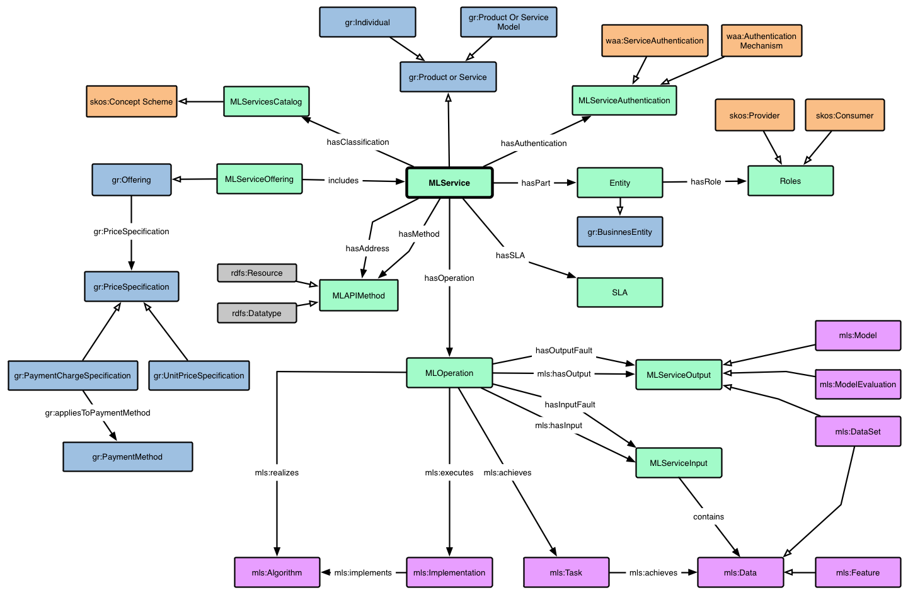

Services Schema¶
Created by Manuel Parra, May 2017
Machine Learning and Data Mining Services Description with TURTLE and JSON-LD
Data on the Web o Cloud use properties (aka predicates) and classes (aka types) to describe people, places, products, events, and any kind of things whatsoever. In the data “Mary is a person, her family name is Watson, she lives is the city of San Francisco”, “Person” is the class of Mary, “City” is the class of San Francisco, “family name” and “lives is” are properties used to describe a person, the latter acting also as a link between a person and a place.
A vocabulary gathers definitions of a set of classes and properties (together simply called terms of the vocabulary), useful to describe specific types of things, or things in a given domain or industry, or things at large but for a specific usage. Terms of vocabularies also provide the links in linked data, in the above case between a Person and a City. The definitions of terms provided by the vocabularies bring clear semantics to descriptions and links, thanks to the formal language they use (some dialect of RDF such as RDFS or OWL). In short, vocabularies provide the semantic glue enabling Data to become meaningful Data.
More info: http://lov.okfn.org/dataset/lov/
Our namespace and set of vocabularies are called dmmlcc: DataMining MachineLearning Cloud Computing Schema and the IRI related is http://dicits.ugr.es/dmmlcc# and it is waiting to be validated and acepted in Linked Open Vocabularies (LOV) (http://lov.okfn.org/) as a Machine Learning Cloud Computing Services Definition following the LOV recommendation http://lov.okfn.org/Recommendations_Vocabulary_Design.pdf
Schema¶
Our schema and vocabulary cover:
- Service Discovery
- Service Classification
- Service Authentication
- Service Pricing
- Service Execution (and execution flow/pipeline)
- Service SLA (Software License)
The schema is the following:
{kind=link}
Definition of the schema¶
The scheme is available from the following link.
Head contains:
@prefix owl: <http://www.w3.org/2002/07/owl#> .
@prefix rdf: <http://www.w3.org/1999/02/22-rdf-syntax-ns#> .
@prefix xml: <http://www.w3.org/XML/1998/namespace> .
@prefix xsd: <http://www.w3.org/2001/XMLSchema#> .
@prefix rdfs: <http://www.w3.org/2000/01/rdf-schema#> .
@prefix dcterms: <http://purl.org/dc/terms/> .
@prefix foaf: <http://xmlns.com/foaf/0.1/> .
@prefix gr: <http://purl.org/goodrelations/v1#> .
@prefix skos: <http://www.w3.org/2004/02/skos/core#> .
@prefix mls: <http://www.w3.org/ns/mls> .
@prefix dmmlcc: <http://dicits.ugr.es/dmmlcc#> .
@prefix waa: <http://purl.oclc.org/NET/WebAuthentication> .
@base <http://dicits.ugr.es/dmmlcc/v1.0/> .
dmmlcc: rdf:type owl:Ontology ;
dcterms:hasVersion 1.0 ;
dcterms:description ""@en ;
dcterms:title ""@en ;
dcterms:created "2012-09-20"^^xsd:date ;
dcterms:issued "2014-01-14"^^xsd:date ;
rdfs:label "Linked USDL Core"@en ;
foaf:page <http://dicits.ugr.es/dmmlcc/start/> ;
dcterms:creator dmmlcc:manuelparra ;
owl:versionInfo "1.1" .
dmmlcc:manuelparra a foaf:Person;
foaf:name "Manuel Parra";
foaf:mbox "manuelparra@ugr.es";
foaf:homepage <http://dicits.ugr.es/members/#manuelparra> .
...
Namespaces and Vocabularies¶
Before we can use a set of terms, we need a precise indication of what specific vocabularies are being used or will be used. A standard initial component of an ontology includes a set of namespace declarations. These provide a means to unambiguously interpret identifiers and make the rest of the ontology presentation much more readable.
An IRI (Internationalized Resource Identifier) within an RDF graph is a Unicode string that conforms to the syntax defined in RFC 3987. We are using the following namespaces and vocabularies:
owl(Web Ontology): http://www.w3.org/2002/07/owl#rdf(Resource Description Framework): http://www.w3.org/1999/02/22-rdf-syntax-ns# .xsd(XML Schema Definition): http://www.w3.org/2001/XMLSchema# .rdfs(Resource Description Framework Schema): http://www.w3.org/2000/01/rdf-schema# .dcterms(Dublin Core): http://purl.org/dc/terms/ .foaf(Friend of a Friend): http://xmlns.com/foaf/0.1/ .gr(GoodRelations): http://purl.org/goodrelations/v1# .skos(Simple Knowledge Organization System): http://www.w3.org/2004/02/skos/core# .mls(Machine Learning Schema): http://www.w3.org/ns/mls .waa(Web Api Authentication): http://purl.oclc.org/NET/WebAuthentication .dmmlcc(DataMining MachineLearning CloudComputing Schema): http://dicits.ugr.es/dmmlcc# .